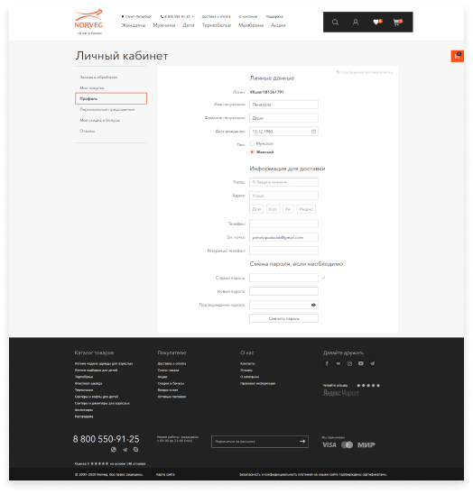
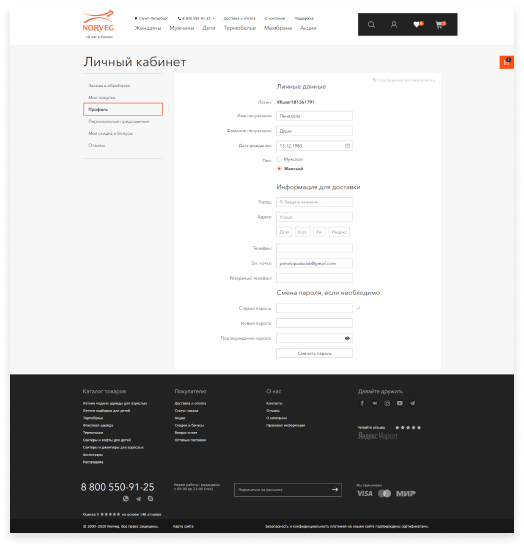

Разработка интернет-магазина
Norveg.ru
Графический стиль
Когда этап проектирования структуры закончен, ключевыми стилеобразующими элементами становятся шрифт, модульная сетка, цвета и ключевые элементы.
В качестве начертания не хотелось использовать уже приевшиеся Helvetica, Futura и пр. Мы нашли шрифт от автора Futura, который нечасто встречали на сайтах и который выглядел свежо.
Цветовое решение приехало к нам из обновленной айдентики. Как раз перед разработкой новой версии сайта клиент обновил офомрление печатной продукции. Мы использовали это в графике сайта для создания преемественности в стилистике.
Интернет-магазины часто очень похожи друг на друга — стиль для них вторичен, на первом месте удобство. Для придания уникальности мы разработали набор абстракций, которыми стилизуем элементы интерфейса и баннеры.
Навигация по сайту
Готовим шаблоны
Фильтрацию разделили на несколько частей. Популярные фильтры вынесли под заголовок — цены, размер, цвет, температура. Второй фильтр идёт по характеристикам, он уже формируется в каждом разделе по своим значениям.
По эволюции карточек товаров за 9 лет можно проследить динамику, что фотографии товаров становятся крупнее с каждой версией. В данный момент фотографии товаров занимают 70% полезной площади.
Карточку товара постоянно оптимизируем по показаниям аналитики. В данный момент раскладка примерно такая — в первый экран обязательно попадает заглавное фото. На сами фотографии у нас выделено 50% основного блока.
Остальная часть — это подборки SKU-товара (цвета, размеры, количество). Все, что можно сделать с товаром, находится в этом блоке. Если нужны отзывы, клик по ним перекидывает на соответствующий блок.
40 макетов на проект
 
